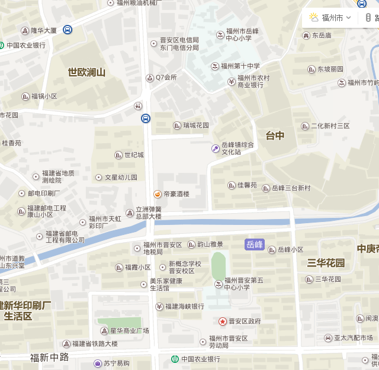

信息查询
信息反馈
量算工具
退出

管线
管线点
1.线号：JB130-XXX
起点：XXXXX
终点：XXXXXX
管材：XXXXXX
管径：XXXXXX
详情
定位
1.线号：JB130-XXX
起点：XXXXX
终点：XXXXXX
管材：XXXXXX
管径：XXXXXX
详情
定位
我是内容2
取消
西二环
路
福建省福州市鼓楼区民政局
西二环
路
福建省福州市鼓楼区民政局
西二环
路
福建省福州市鼓楼区民政局
管类：
10.00
起点埋深：
10.00
终点埋深：
10.00
起点：
10.00
终点：
10.00
管材：
10.00
管径：
10.00
建设年代：
10.00
权属单位：
10.00
道路：
10.00
备注：
10.00